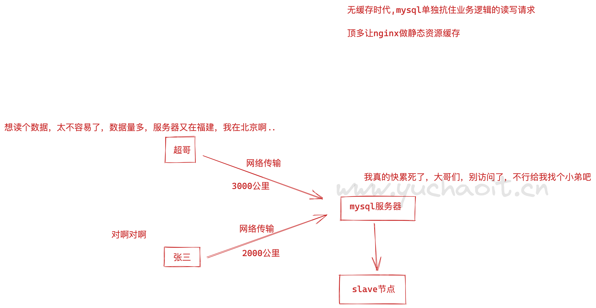
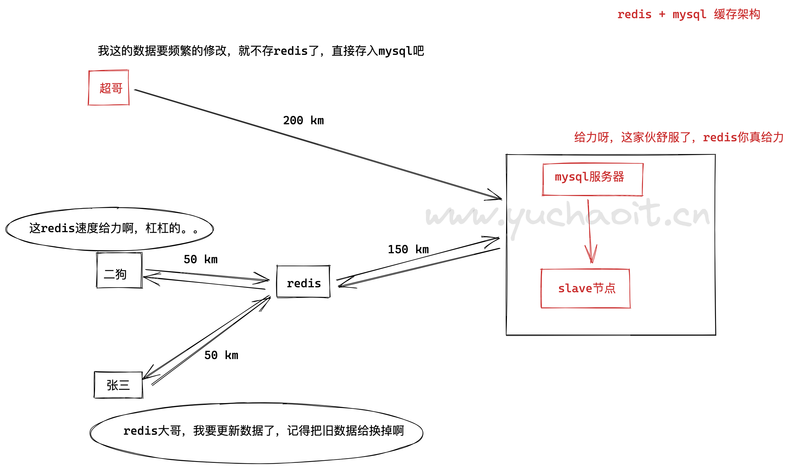

高并发缓存中间件Redis
https://tech.meituan.com/2020/07/01/kv-squirrel-cellar.html
美团万亿级 KV 存储架构与实践
阿里云 redis文档
https://help.aliyun.com/product/26340.html
为什么要学redis，架构图解
无redis架构
对于Web来说，用户量和访问量增一定程度上推动项目技术和架构的更迭和进步。
可能会有以下的一些状况：
页面并发量和访问量并不多，MySQL足以支撑自己逻辑业务的发展。
那么其实可以不加缓存。最多对静态页面进行缓存即可。
页面的并发量显著增多，数据库有些压力，并且有些数据更新频率较低反复被查询或者查询速度较慢。
那么就可以考虑使用缓存技术优化。
对高命中的对象存到key-value形式的Redis中，那么，如果数据被命中，那么可以不经过效率很低的db。
从高效的redis中查找到数据。
当然，可能还会遇到其他问题，你还通过静态页面缓存页面、cdn加速、甚至负载均衡这些方法提高系统并发量。

使用redis缓存架构
缓存适用于高并发的场景，提升服务容量。
主要是将从经常被访问的数据或者查询成本较高从慢的介质中存到比较快的介质中，比如从硬盘—>内存。
我们知道大多数关系数据库是基于硬盘读写的，其效率和资源有限，而redis是基于内存的，其读写速度差别差别很大。
当并发过高关系数据库性能达到瓶颈时候，就可以策略性将常访问数据放到Redis提高系统吞吐和并发量。
对于常用网站和场景，关系数据库主要可能慢在两个地方：
1.读写IO性能较差
2.一个数据可能通过较大量计算得到
所以使用缓存能够减少磁盘IO次数和关系数据库的计算次数。
读取上速度快也从两个方面体现：
1.基于内存，读写较快
2.使用哈希算法直接定位结果不需要计算，直接key-value获取结果
所以对于像样的，有点规模的网站，缓存是很必要的，而Redis无疑是最好的选择之一。

但是使用缓存，也要注意诸多问题，多引入了一个环节，必然会引发更多问题
1. 缓存不适用于，数据一致性特别高，以及频繁更新数据的场景
2. 缓存也不适用于并发量并不多的，加入缓存，不但架构更难维护，浪费资源，且让项目更臃肿，可能redis也会出问题
3. 引入缓存，就要考虑对k-v的数据如何设计
1.关系型、非关系数据库
关系型数据库、mysql、oracle、postgreSQL
非关系 redis mongoDB ES
nosql、not only sql、不仅仅是sql，是不同于传统关系型数据库的统称。
特点是 key-value 这种键值对存储数据的形式，而不是mysql这样库、表结构存储形式。
noSQL用于处理高速读写的数据存储场景
如用户访问行为，用户地理定位数据、电商秒杀类的订单数据（超高的瞬时并发请求）
视频网的弹幕信息、直播间的刷礼物、点赞等功能
LOL、王者的玩家巅峰排行榜的数据
微博的最新评论、最新点赞
这类要求高并发，高读写的业务场景，数据都是存储在redis里，提高APP响应速度，让用户更好的体验
2.redis特性
Redis是一种支持key-value等多种数据结构的存储系统。
可用于缓存，事件发布或订阅，高速队列等场景。
支持网络，提供字符串，哈希，列表，队列，集合结构直接存取，基于内存，可持久化。
1.软件源码高质量，运行速度快、C语言开发、单线程架构
2.支持丰富数据类型，面对各种业务场景
字符串、哈希、列表、集合、有序集合
3.功能丰富，可以实现如
计数器--------点赞、评论数
key过期功能-------购物车订单
消息队列
发布订阅---聊天室
4.支持多种语言客户端
php，java，golang，python
5.支持数据持久化
运行时的数据都在内存，可以基于RDB，AOF持久化到磁盘里，或混合持久化
6.内置高可用架构
主从复制
哨兵
集群
3.redis面试重点-应用场景
redis用的如何？你们应用在哪些场景？
1.缓存
key过期特性
- 用户登录网站的session信息写入redis、过期后自动删除
- 商城的优惠券过期
- 短信验证码的过期
2.排行榜
数据类型的列表、有序集合
- 抖音点赞点击量
- 直播间打赏老板排行榜
3.计数器
- 博客阅读量
- 视频播放次数
- 在线观看人数
- 评论最新数量
- 点赞、点踩
4. 社交网络
redis的集合数据类型
- 粉丝
- 共同好友 / 可能认识的人
- 兴趣爱好 / 同兴趣的人
- 用户注册、账号是否已存在
5.消息队列
redis的列表类型
- ELK日志的缓存
- 聊天记录
6. 发布订阅
- 粉丝关注通知
- 粉丝群消息发布
因此，你猜猜全中国哪家公司是redis大户？没错，这不明显是微博么，是世界级，数一数二的redis大户。
4.redis安装部署
官网
https://redis.io/
版本选择
2.x 老掉牙
3.x 还有很多公司用，开始支持redis-cluster
4.x 混合持久化玩法
5.x 快手等互联网公司更新到这了
6.x 最新版
安装部署redis5
1. 目录规划
mkdir -p /data/soft/
mkdir -p /opt/redis_6379/{conf,logs,pid}
mkdir -p /data/redis_6379/
# 2.下载redis5
[root@db-51 ~]#cd /data/soft/
[root@db-51 /data/soft]#wget http://download.redis.io/releases/redis-5.0.7.tar.gz
# 踩坑记录安装依赖
[root@db-51 /opt/redis]#yum install gcc make -y
# 3.解压部署
[root@db-51 /data/soft]#tar -zxf redis-5.0.7.tar.gz -C /opt/
[root@db-51 /data/soft]#
[root@db-51 /data/soft]#ln -s /opt/redis-5.0.7/ /opt/redis
[root@db-51 /data/soft]#
[root@db-51 /data/soft]#cd /opt/redis
[root@db-51 /opt/redis]#make MALLOC=libc && make install
# 4.若要进行编译测试，这是一个对编译环境检查，编译结果的好习惯
yum install tcl tcl-devel -y
make test
看到这个结果就很nice
\o/ All tests passed without errors!
Cleanup: may take some time... OK
make[1]: Leaving directory `/opt/redis-5.0.7/src'
redis配置文件
mkdir -p /opt/redis_6379/{conf,logs,pid}
mkdir -p /data/redis_6379
cat > /opt/redis_6379/conf/redis_6379.conf <<'EOF'
daemonize yes
bind 127.0.0.1 10.0.0.51
port 6379
pidfile /opt/redis_6379/pid/redis_6379.pid
logfile /opt/redis_6379/logs/redis_6379.log
EOF
启动redis
检查可执行命令
[root@db-51 /opt/redis]#ls -l /usr/local/bin/redis-*
-rwxr-xr-x 1 root root 353808 Aug 5 18:42 /usr/local/bin/redis-benchmark
-rwxr-xr-x 1 root root 4058352 Aug 5 18:42 /usr/local/bin/redis-check-aof
-rwxr-xr-x 1 root root 4058352 Aug 5 18:42 /usr/local/bin/redis-check-rdb
-rwxr-xr-x 1 root root 799288 Aug 5 18:42 /usr/local/bin/redis-cli
lrwxrwxrwx 1 root root 12 Aug 5 18:42 /usr/local/bin/redis-sentinel -> redis-server
-rwxr-xr-x 1 root root 4058352 Aug 5 18:42 /usr/local/bin/redis-server
启动服务端
[root@db-51 /opt/redis]#redis-server /opt/redis_6379/conf/redis_6379.conf
检查
[root@db-51 /opt/redis]#netstat -tunlp|grep redis
tcp 0 0 10.0.0.51:6379 0.0.0.0:* LISTEN 8744/redis-server 1
tcp 0 0 127.0.0.1:6379 0.0.0.0:* LISTEN 8744/redis-server 1
[root@db-51 /opt/redis]#ps -ef|grep redi[s]
root 8744 1 0 18:56 ? 00:00:00 redis-server 127.0.0.1:6379
登录redis
[root@db-51 /opt/redis]#redis-cli -h 127.0.0.1 -p 6379
127.0.0.1:6379> ping
PONG
127.0.0.1:6379>
127.0.0.1:6379> set name wwww.yuchaoit.cn
OK
127.0.0.1:6379> get name
"wwww.yuchaoit.cn"
127.0.0.1:6379>
关闭redis
建议方式
127.0.0.1:6379> SHUTDOWN
not connected>
方式二
[root@db-51 /opt/redis]#redis-server /opt/redis_6379/conf/redis_6379.conf
[root@db-51 /opt/redis]#
[root@db-51 /opt/redis]#redis-cli shutdown
[root@db-51 /opt/redis]#!ps
ps -ef|grep redi[s]
不推荐方式
kill
pkill
killall
配置systemctl管理脚本
停止redis
[root@db-51 /opt/redis]#redis-cli shutdown
授权配置
groupadd redis -g 1025
useradd redis -u 1025 -g 1025 -M -s /sbin/nologin
chown -R redis.redis /opt/redis*
chown -R redis.redis /data/redis*
# redis.service脚本
cat > /usr/lib/systemd/system/redis.service <<'EOF'
[Unit]
Description=redis service by www.yuchaoit.cn
After=network.target
After=network-online.target
Wants=network-online.target
[Service]
Type=notify
ExecStart=/usr/local/bin/redis-server /opt/redis_6379/conf/redis_6379.conf --supervised systemd
ExecStop=/usr/local/bin/redis-cli shutdown
User=redis
Group=redis
RuntimeDirectory=redis
RuntimeDirectoryMode=0755
[Install]
WantedBy=multi-user.target
EOF
# 重载systemd服务，启动
systemctl daemon-reload
systemctl restart redis
[root@db-51 /opt/redis]#systemctl status redis
● redis.service - redis service by www.yuchaoit.cn
Loaded: loaded (/usr/lib/systemd/system/redis.service; disabled; vendor preset: disabled)
Active: active (running) since Fri 2022-08-05 19:13:02 CST; 9s ago
Main PID: 8933 (redis-server)
CGroup: /system.slice/redis.service
└─8933 /usr/local/bin/redis-server 127.0.0.1:6379
Aug 05 19:13:02 db-51 systemd[1]: Starting redis service by www.yuchaoit.cn...
Aug 05 19:13:02 db-51 systemd[1]: Started redis service by www.yuchaoit.cn.
redis日志警告处理
在redis日志里，可以看到启动后的一些问题
优化1
30 8933:C 05 Aug 2022 19:13:02.761 * supervised by systemd, will signal readiness
31 8933:M 05 Aug 2022 19:13:02.762 # You requested maxclients of 10000 requiring at least 10032 max file descriptors.
32 8933:M 05 Aug 2022 19:13:02.762 # Server can't set maximum open files to 10032 because of OS error: Operation not perm itted.
33 8933:M 05 Aug 2022 19:13:02.762 # Current maximum open files is 4096. maxclients has been reduced to 4064 to compensat e for low ulimit. If you need higher maxclients increase 'ulimit -n'.
修改方法
1. 给systemd服务添加参数，修改redis可打开的文件数
[root@db-51 /opt/redis]#cat /usr/lib/systemd/system/redis.service
[Unit]
Description=redis service by www.yuchaoit.cn
After=network.target
After=network-online.target
Wants=network-online.target
[Service]
LimitNOFILE=65536
Type=notify
ExecStart=/usr/local/bin/redis-server /opt/redis_6379/conf/redis_6379.conf --supervised systemd
ExecStop=/usr/local/bin/redis-cli shutdown
User=redis
Group=redis
RuntimeDirectory=redis
RuntimeDirectoryMode=0755
[Install]
WantedBy=multi-user.target
[root@db-51 /opt/redis]#
2.重启
[root@db-51 /opt/redis]#systemctl daemon-reload
[root@db-51 /opt/redis]#systemctl restart redis
ulimit系统优化参数
ulimit主要是用来限制进程对资源的使用情况的，它支持各种类型的限制，常用的有：
内核文件的大小限制
进程数据块的大小限制
Shell进程创建文件大小限制
可加锁内存大小限制
常驻内存集的大小限制
打开文件句柄数限制
分配堆栈的最大大小限制
CPU占用时间限制用户最大可用的进程数限制
Shell进程所能使用的最大虚拟内存限制
[root@db-51 /opt/redis]#ulimit -a
core file size (blocks, -c) 0
data seg size (kbytes, -d) unlimited
scheduling priority (-e) 0
file size (blocks, -f) unlimited
pending signals (-i) 14996
max locked memory (kbytes, -l) 64
max memory size (kbytes, -m) unlimited
open files (-n) 1024
pipe size (512 bytes, -p) 8
POSIX message queues (bytes, -q) 819200
real-time priority (-r) 0
stack size (kbytes, -s) 8192
cpu time (seconds, -t) unlimited
max user processes (-u) 14996
virtual memory (kbytes, -v) unlimited
file locks (-x) unlimited
优化2
虚拟内存相关警告
37 8933:M 05 Aug 2022 19:13:02.763 # WARNING overcommit_memory is set to 0! Background save may fail under low memory con dition. To fix this issue add 'vm.overcommit_memory = 1' to /etc/sysctl.conf and then reboot or run the command 'sysct l vm.overcommit_memory=1' for this to take effect.
解决
修改系统内核参数
# 写入内核参数配置文件
sysctl -w vm.overcommit_memory=1
sysctl -p
优化3
关闭THP大内存页
38 8933:M 05 Aug 2022 19:13:02.763 # WARNING you have Transparent Huge Pages (THP) support enabled in your kernel. This will create latency and memory usage issues with Redis. To fix this issue run the command 'echo never > /sys/kernel/mm/transparent_hugepage/enabled' as root, and add it to your /etc/rc.local in order to retain the setting after a reboot. Redis must be restarted after THP is disabled.
解决
echo never > /sys/kernel/mm/transparent_hugepage/enabled
优化4
9099:M 05 Aug 2022 19:23:46.721 * Running mode=standalone, port=6379.
9099:M 05 Aug 2022 19:23:46.721 # WARNING: The TCP backlog setting of 511 cannot be enforced because /proc/sys/net/core/somaxconn is set to the lower value of 128.
9099:M 05 Aug 2022 19:23:46.721 # Server initialized
根据日志提示，修改即可
[root@db-51 ~]#echo "511" > /proc/sys/net/core/somaxconn
[root@db-51 ~]#sysctl -w net.core.somaxconn=4096
net.core.somaxconn = 4096
最后重启redis即可
配置文件解释
daemonize no #默认redis前台运行，修改yes放入后台守护进程运行，pid写入redis.pid
pidfile /var/run/redis_6379.pid # 运行多redis实例的话，需要区分pid、配置文件
port 6379 # 默认redis链接端口
tcp-backlog 511 # 在高并发系统中，你需要设置一个较高的tcp-backlog来避免客户端连接速度慢的问题（三次握手的速度）。
bind 127.0.0.1 0.0.0.0 # 设置redis运行地址，走内网，还是允许公网访问
timeout 0 # 客户端连接的超时时间 ，0 是关闭功能
详解配置
# Redis 配置文件.
# 请注意，为了读取配置文件，必须以文件路径作为第一个参数启动Redis：
# ./redis-server /path/to/redis.conf
# 内存大小单位
#
# 1k => 1000 bytes
# 1kb => 1024 bytes
# 1m => 1000000 bytes
# 1mb => 1024*1024 bytes
# 1g => 1000000000 bytes
# 1gb => 1024*1024*1024 bytes
#
# 单位不区分大小写，因此 1GB 1Gb 1gB 是一样的.
################################## INCLUDES ###################################
# 在此处包含一个或多个其他配置文件。如果您有一个标准模板可用于所有Redis服务器，但还需要自定义一些服务器设置。
#
# “include”不会被来自admin或Redis Sentinel的命令“CONFIG REWRITE”重写。
# 由于Redis始终使用最后处理的行为作为配置指令的值，因此最好将include放在此文件的开头，以避免在运行时覆盖配置更改。
#
# 如果你要使用includes来覆盖配置选项，最好将include作为最后一行。
#
# include /path/to/local.conf
# include /path/to/other.conf
################################## MODULES #####################################
# 启动时加载指定模块，如果服务器无法加载模块，它将中止。 这里可以使用多个loadmodule指令。
#
# loadmodule /path/to/my_module.so
# loadmodule /path/to/other_module.so
################################## NETWORK #####################################
# 默认情况下，如果未指定“bind”配置指令，则Redis将监听来自服务器上可用的所有端口的连接。
# 可以使用“bind”配置指令仅监听一个或多个指定的IP地址。
#
# Examples:
#
# bind 192.168.1.100 10.0.0.1
# bind 127.0.0.1 ::1
#
# ~~~ WARNING ~~~ 如果运行Redis的计算机直接暴露于Internet，则绑定到所有接口是危险的，并且会将实例暴露给Internet上的每个人。
# 因此，默认情况下，我们不会注释以下绑定指令，这意味着Redis只能接受来自指定ip的客户端的连接
#
# IF YOU ARE SURE YOU WANT YOUR INSTANCE TO LISTEN TO ALL THE INTERFACES
# JUST COMMENT THE FOLLOWING LINE.
# ~~~~~~~~~~~~~~~~~~~~~~~~~~~~~~~~~~~~~~~~~~~~~~~~~~~~~~~~~~~~~~~~~~~~~~~~
bind 127.0.0.1
# 保护模式是一层安全保护，以避免在Internet上打开的Redis实例被访问和利用。
#
# 当保护模式打开的情况下,如果：
#
# 1) 服务器未使用“bind”指令显式绑定到一组地址。
# 2) 没有配置密码。
#
# 服务器仅接受来自IPv4和IPv6环回地址127.0.0.1和:: 1以及Unix域套接字的客户端的连接。
#
# 默认情况下保护模式是开启的。 只有在希望其他主机的客户端即使未配置任何身份验证，仍要连接到Redis时，应该禁用此选项并且不使用“bind”指令明确列出一组特定的接口。
protected-mode yes
# 接受指定端口上的连接，默认为6379
# 如果指定了端口0，则Redis不会侦听TCP套接字。
port 6379
# TCP连接最大积压数
#
# 在大量客户端连接的情况下，应该提高该值，以免客户端连接慢。
# 但该值受系统内核参数的限制，包括 somaxconn 和 tcp_max_syn_backlog。
tcp-backlog 511
# Unix socket.
#
# 指定将用于监听传入连接的Unix套接字的路径。 没有默认值，因此Redis在未指定时不会侦听unix套接字。
#
# unixsocket /tmp/redis.sock
# unixsocketperm 700
# 当连接的客户端连续空闲指定时间后，就断开该连接。指定值为0时禁用超时机制。
timeout 0
# TCP keepalive.
# 周期性检测客户端是否可用
# 如果非零，则在没有通信的情况下使用SO_KEEPALIVE向客户端发送TCP ACK。
# 此选项的合理值为300秒
tcp-keepalive 300
################################# GENERAL #####################################
# 设定是否以守护进程启动服务（默认是no），守护进程会生成 PID 文件 /var/run/redis_6379.pid。
daemonize no
# If you run Redis from upstart or systemd, Redis can interact with your
# supervision tree. Options:
# supervised no - no supervision interaction
# supervised upstart - signal upstart by putting Redis into SIGSTOP mode
# supervised systemd - signal systemd by writing READY=1 to $NOTIFY_SOCKET
# supervised auto - detect upstart or systemd method based on
# UPSTART_JOB or NOTIFY_SOCKET environment variables
# Note: these supervision methods only signal "process is ready."
# They do not enable continuous liveness pings back to your supervisor.
supervised no
# 启用守护进程模式时，会生成该文件。
pidfile /var/run/redis_6379.pid
# 指定日志级别
# 日志级别有以下选项:
# debug (适用于开发/测试)
# verbose (很少但很有用的信息)
# notice (信息适中，推荐选项)
# warning (只记录非常重要/关键的消息)
loglevel notice
# 指定保存日志的文件。请注意，如果您使用标准输出进行日志记录，守护进程情况下，日志将发送到/dev/null
logfile ""
# 要启用日志记录到系统记录器，只需将“syslog-enabled”设置为yes，并可选择更新其他syslog参数以满足您的需要。
# syslog-enabled no
# 指定syslog标识。
# syslog-ident redis
# 指定syslog工具。 必须是USER或LOCAL0-LOCAL7之间。
# syslog-facility local0
# 设置数据库数量，默认为16. 默认数据库是 DB 0, 你可以使用 SELECT <dbid> 选择使用的数据库。
# 数据库编号在 0 到 'databases'-1
databases 16
# 启动日志中是否显示redis logo，默认是开启的
always-show-logo yes
################################ SNAPSHOTTING ################################
#
# 数据持久化:
#
# save <seconds> <changes>
#
# 指定时间间隔后，如果数据变化达到指定次数，则导出生成快照文件
#
# 示例如下：
#
# 900 秒(15 分钟)内至少有1个key被修改
# 300 秒(5分钟)内至少有10个key被修改
# 60 秒(1分钟)内至少有10000个key被修改
#
#
# 如果指定 save ""，则相当于清除前面指定的所有 save 设置
#
# save ""
save 900 1
save 300 10
save 60 10000
# 在启用快照的情况下(指定了有效的 save)，如果遇到某次快照生成失败(比如目录无权限)，
# 之后的数据修改就会被禁止。这有利于用户及早发现快照保存失败，以免更多的数据不能持久化而丢失的风险。
# 当快照恢复正常后，数据的修改会自动开启。
# 如果你有其他的持久化监控，你可以关闭本机制。
stop-writes-on-bgsave-error yes
# 快照中字符串值是否压缩
rdbcompression yes
# 如果开启，校验和会被放在文件尾部。这将使快照数据更可靠，但会在快照生成与加载时降低大约 10% 的性能，追求高性能时可关闭该功能。
rdbchecksum yes
# 指定保存快照文件的名称
dbfilename dump.rdb
# 指定保存快照文件的目录，AOF(Append Only File) 文件也会生成到该目录
dir ./
################################# REPLICATION #################################
# 主从复制。 使用 replicaof 使Redis实例成为另一台Redis服务器的副本。
#
# +------------------+ +---------------+
# | Master | ---> | Replica |
# | (receive writes) | | (exact copy) |
# +------------------+ +---------------+
#
# 1) Redis复制是异步的，但是如果master与一定数量的副本无法连接，则可以将主服务器配置为停止接受写入。
# 2) 如果再较短时间内与副本失去了连接，当Redis副本与master重新连接时可以执行部分重新同步。因此就要求配置一个合理的 backlog 值。
# 3) 当副本节点重新连接到master时，重新同步复制时自动的，不需要用户干预。
#
# replicaof <masterip> <masterport>
# 如果主服务器受密码保护（使用下面的“requirepass”配置指令），则可以在启动复制同步过程之前告知副本服务器进行身份验证，否则主服务器将拒绝副本服务器请求。
#
# masterauth <master-password>
# 当从库与主库连接中断，或者主从同步正在进行时，如果有客户端向从库读取数据：
# - yes: 从库答复现有数据，可能是旧数据(初始从未修改的值则为空值)
# - no: 从库报错“正在从主库同步”
replica-serve-stale-data yes
# 从库只允许读取
replica-read-only yes
# 无盘同步
#
# -------------------------------------------------------
# WARNING: DISKLESS REPLICATION IS EXPERIMENTAL CURRENTLY
# -------------------------------------------------------
# 新连接(包括连接中断后重连)的从库不可采用增量同步，只能采用全量同步(RDB文件由主库传给从库)，有两种传递方式：
# - 磁盘形式：主库创建子进程，子进程写入磁盘 RDB 文件，再由父进程立即传给从库；
# - 无磁盘形式：主库创建子进程，子进程把 RDB 文件直接写入从库的 SOCKET 连接。
repl-diskless-sync no
# 无盘同步传输间隔（秒）
repl-diskless-sync-delay 5
# 从库向主库PING的间隔（秒）
#
# repl-ping-replica-period 10
# 以下选项设置复制超时：
#
# 1) 从副本的角度来看，在SYNC期间批量传输I / O.
# 2) 从副本（data，ping）的角度来看master超时。
# 3) 从主服务器的角度来看副本超时（REPLCONF ACK ping）。
#
# 确保此值大于为repl-ping-replica-period指定的值非常重要，否则每次主服务器和副本服务器之间的流量较低时都会检测到超时。
#
# repl-timeout 60
# 在SYNC之后禁用副本套接字上的TCP_NODELAY？
#
# 如果选择“yes”，Redis将使用较少数量的TCP数据包和较少的带宽将数据发送到副本。 但这可能会增加数据在副本端出现的延迟，使用默认配置的Linux内核最多可达40毫秒。
#
# 如果选择“no”，则副本上显示的数据延迟将减少，但将使用更多带宽进行复制。
#
# 默认情况下，我们针对低延迟进行优化，但是在非常高的流量条件下，或者当主节点和副本很多时，将其设置为 yes 或许是较好的选择
repl-disable-tcp-nodelay no
# 设置复制积压大小（backlog）。 积压是一个缓冲区，当副本断开连接一段时间后会累积副本数据，因此当副本想要再次重新连接时，通常不需要完全重新同步，只需要部分重新同步就足够了
#
# 复制backlog越大，副本可以断开连接的时间越长。
#
# repl-backlog-size 1mb
# 当master与副本节点断开时间超过指定时间后，将释放复制积压缓冲区（backlog）
#
# 如果设置为0，表示一直不释放复制积压缓冲区
#
# repl-backlog-ttl 3600
# 副本优先级，哨兵模式下，如果主服务器不再正常工作，Redis Sentinel 将优先使用它来选择要升级为主服务器的副本。
#
# 值越低，优先级越高
#
# 优先级为0会将副本标记为无法担任master的角色，因此Redis Sentinel永远不会选择优先级为0的副本进行升级。
#
# 默认情况下，优先级为100。
replica-priority 100
# 如果可用连接的副本数少于N个，并且延迟小于或等于M秒，则master停止接受写入。
#
# 以秒为单位的延迟（必须<=指定值）是根据从副本接收的最后一次ping计算的，通常每秒发送一次。
#
# 例如，要求至少3个在线且滞后时间<= 10秒的副本：
#
# min-replicas-to-write 3
# min-replicas-max-lag 10
#
# 以上两个属性，任意一个设置为0，都会禁用该功能。
#
# 默认情况下，min-replicas-to-write设置为0（功能已禁用），min-replicas-max-lag设置为10。
# 当使用端口转发或网络地址转换（NAT）时，实际上可以通过不同的IP和端口对副本进行访问。
# 副本可以使用以下两个选项，向其主服务器报告一组特定的IP和端口。
#
# 如果只需要覆盖端口或IP地址，则无需使用这两个选项。
#
# replica-announce-ip 5.5.5.5
# replica-announce-port 1234
################################## SECURITY ###################################
# 设置redis访问密码
#
# requirepass foobared
# 命令重命名.
# 对于一些敏感的命令，不希望任意客户端都可以执行，可以改掉默认的名字，新名字只告知特定的客户端来执行。
# 可以命令改名：rename-command CONFIG b840fc02d524045429941cc15f59e41cb7be6c52
# 可以禁用命令：rename-command CONFIG ""，即新名称为空串。
# 需要注意的是，命令改名保存至 AOF 文件或传输至从库，可能导致问题。
# rename-command CONFIG ""
################################### CLIENTS ####################################
# 同一时刻最多可以接纳的客户端数目(Redis 服务要占用其中的大约 32 个文件描述符)。
# 如果客户端连接数达到该上限，新来客户端将被告知“已达到最大客户端连接数”。
#
# maxclients 10000
############################## MEMORY MANAGEMENT ################################
# 内存使用上限
#
# 当内存达到上限时，Redis 将使用指定的策略清除其他键值。
# 如果 Redis 无法清除(或者策略不允许清除键值)，将对占用内存的命令报错，但对只读的命令正常服务。
#
# maxmemory <bytes>
# - volatile-lru: 针对到期的键值，采取 LRU 策略；
# - volatile-lfu: 针对到期的键值，采取 LFU 策略；
# - volatile-random: 针对到期的键值，采取随机策略；
# - allkeys-lru: 针对所有键值，采取 LRU 策略；
# - allkeys-lfu: 针对所有键值，采取 LFU 策略；
# - allkeys-random: 针对所有键值，采取随机策略；
# - volatile-ttl: 删除最近到期的key（次要TTL）
# - noeviction: 不清除任何内容，只是在写入操作时报错。
#
# LRU表示最近最少使用
# LFU意味着最少使用
#
# LRU，LFU和volatile-ttl都是使用近似随机算法实现的。
#
# 默认值是：noeviction
#
# maxmemory-policy noeviction
# 清除键值时取样数量
# LRU，LFU和最小TTL算法不是精确的算法，而是近似算法（为了节省内存），因此您可以调整它以获得速度或精度。
# 默认情况下，Redis将检查五个键并选择最近使用的键，您可以使用以下配置指令更改样本大小。
# 默认值为5会产生足够好的结果。 10:近似非常接近真实的LRU但成本更高的CPU。 3:更快但不是很准确。
#
# maxmemory-samples 5
# 从Redis 5开始，默认情况下，副本将忽略其maxmemory设置（除非在故障转移后或手动将其提升为主设备）。
# 这意味着key的清除将由主服务器处理，当主服务器中的key清除时，将DEL命令发送到副本。
#
# 此行为可确保主服务器和副本服务器保持一致，但是如果您的副本服务器是可写的，或者您希望副本服务器具有不同的内存设置，
# 并且您确定对副本服务器执行的所有写操作都是幂等的， 然后你可以改变这个默认值（但一定要明白你在做什么）。
#
# replica-ignore-maxmemory yes
############################# LAZY FREEING ####################################
# lazy free 为惰性删除或延迟释放；
# 当删除键的时候,redis提供异步延时释放key内存的功能，
# 把key释放操作放在bio(Background I/O)单独的子线程处理中，
# 减少删除big key对redis主线程的阻塞。有效地避免删除big key带来的性能和可用性问题。
# lazy free的使用分为2类：第一类是与DEL命令对应的主动删除，第二类是过期key删除。
# 针对redis内存使用达到maxmeory，并设置有淘汰策略时；在被动淘汰键时，是否采用lazy free机制；
lazyfree-lazy-eviction no
# 针对设置有TTL的键，达到过期后，被redis清理删除时是否采用lazy free机制；
lazyfree-lazy-expire no
# 针对有些指令在处理已存在的键时，会带有一个隐式的DEL键的操作。如rename命令，当目标键已存在,redis会先删除目标键，如果这些目标键是一个big key,那就会引入阻塞删除的性能问题
lazyfree-lazy-server-del no
# 针对slave进行全量数据同步，slave在加载master的RDB文件前，会运行flushall来清理自己的数据场景，
replica-lazy-flush no
############################## APPEND ONLY MODE ###############################
# 可以同时启用AOF和RDB持久性而不会出现问题。 如果在启动时检查到启用了AOF，Redis将优先加载AOF。
# AOF 持久化机制默认是关闭的
#
appendonly no
# AOF持久化文件名称默认为 appendonly.aof
appendfilename "appendonly.aof"
# fsync() 调用会告诉操作系统将缓冲区的数据同步到磁盘，可取三种值：always、everysec和no。
# always：实时会极大消弱Redis的性能，因为这种模式下每次write后都会调用fsync。
# no：write后不会有fsync调用，由操作系统自动调度刷磁盘，性能是最好的。
# everysec：每秒调用一次fsync（默认）
# appendfsync always
appendfsync everysec
# appendfsync no
# 在AOF文件 rewrite期间,是否对aof新记录的append暂缓使用文件同步策略,主要考虑磁盘IO开支和请求阻塞时间。默认为no,表示"不暂缓",新的aof记录仍然会被立即同步
no-appendfsync-on-rewrite no
# 当AOF增长超过指定比例时，重写AOF文件，设置为0表示不自动重写AOF文件，重写是为了使aof体积保持最小，而确保保存最完整的数据。
# 这里表示增长一倍
auto-aof-rewrite-percentage 100
#触发aof rewrite的最小文件大小，这里表示，文件大小最小64mb才会触发重写机制
auto-aof-rewrite-min-size 64mb
# AOF文件可能在尾部是不完整的。那redis重启时load进内存的时候就有问题了。
#
# 如果选择的是yes，当截断的aof文件被导入的时候，会自动发布一个log给客户端然后load。如果是no，用户必须手动redis-check-aof修复AOF文件才可以。默认值为 yes。
aof-load-truncated yes
# 开启混合持久化
# redis保证RDB转储跟AOF重写不会同时进行。
# 当redis启动时，即便RDB和AOF持久化同时启用且AOF，RDB文件都存在，则redis总是会先加载AOF文件，这是因为AOF文件被认为能够更好的保证数据一致性，
# 当加载AOF文件时，如果启用了混合持久化，那么redis将首先检查AOF文件的前缀，如果前缀字符是REDIS，那么该AOF文件就是混合格式的，redis服务器会先加载RDB部分，然后再加载AOF部分。
aof-use-rdb-preamble yes
################################ LUA SCRIPTING ###############################
# Lua脚本执行超时时间
#
# 设置成0或者负值表示不限时
lua-time-limit 5000
################################ REDIS CLUSTER ###############################
#
# 开启集群功能，此redis实例作为集群的一个节点
#
# cluster-enabled yes
# 集群配置文件
# 此配置文件不能人工编辑，它是集群节点自动维护的文件，主要用于记录集群中有哪些节点、他们的状态以及一些持久化参数等，方便在重启时恢复这些状态。通常是在收到请求之后这个文件就会被更新
# cluster-config-file nodes-6379.conf
# 集群中的节点能够失联的最大时间，超过这个时间，该节点就会被认为故障。如果主节点超过这个时间还是不可达，则用它的从节点将启动故障迁移，升级成主节点
#
# cluster-node-timeout 15000
# 如果设置成０，则无论从节点与主节点失联多久，从节点都会尝试升级成主节点。
# 如果设置成正数，则cluster-node-timeout*cluster-slave-validity-factor得到的时间，是从节点与主节点失联后，
# 此从节点数据有效的最长时间，超过这个时间，从节点不会启动故障迁移。
# 假设cluster-node-timeout=5，cluster-slave-validity-factor=10，则如果从节点跟主节点失联超过50秒，此从节点不能成为主节点。
# 注意，如果此参数配置为非0，将可能出现由于某主节点失联却没有从节点能顶上的情况，从而导致集群不能正常工作，
# 在这种情况下，只有等到原来的主节点重新回归到集群，集群才恢复运作。
#
# cluster-replica-validity-factor 10
# 主节点需要的最小从节点数，只有达到这个数，主节点失败时，从节点才会进行迁移。
#
# cluster-migration-barrier 1
# 在部分key所在的节点不可用时，如果此参数设置为"yes"(默认值), 则整个集群停止接受操作；
# 如果此参数设置为”no”，则集群依然为可达节点上的key提供读操作。
#
# cluster-require-full-coverage yes
# 在主节点失效期间,从节点不允许对master失效转移
# cluster-replica-no-failover no
########################## CLUSTER DOCKER/NAT support ########################
#默认情况下，Redis会自动检测自己的IP和从配置中获取绑定的PORT，告诉客户端或者是其他节点。
#而在Docker环境中，如果使用的不是host网络模式，在容器内部的IP和PORT都是隔离的，那么客户端和其他节点无法通过节点公布的IP和PORT建立连接。
#如果开启以下配置，Redis节点会将配置中的这些IP和PORT告知客户端或其他节点。而这些IP和PORT是通过Docker转发到容器内的临时IP和PORT的。
#
# Example:
#
# cluster-announce-ip 10.1.1.5
# cluster-announce-port 6379
# cluster-announce-bus-port 6380
################################## SLOW LOG ###################################
# 执行时间大于slowlog-log-slower-than的才会定义成慢查询，才会被slow-log记录
# 这里的单位是微秒，默认是 10ms
slowlog-log-slower-than 10000
# 慢查询最大的条数，当slowlog超过设定的最大值后，会将最早的slowlog删除，是个FIFO队列
slowlog-max-len 128
################################ LATENCY MONITOR ##############################
# Redis延迟监视子系统在运行时对不同的操作进行采样，以便收集可能导致延时的数据根源。
#
# 通过LATENCY命令，可以打印图表并获取报告。
#
# 系统仅记录在等于或大于 latency-monitor-threshold 指定的毫秒数的时间内执行的操作。 当其值设置为0时，将关闭延迟监视器。
#
# 默认情况下，延迟监视被禁用，因为如果您没有延迟问题，则通常不需要延迟监视，并且收集数据会对性能产生影响，虽然非常小。
# 如果需要，可以使用命令“CONFIG SET latency-monitor-threshold <milliseconds>”在运行时轻松启用延迟监视。
latency-monitor-threshold 0
############################# EVENT NOTIFICATION ##############################
# Redis可以向Pub / Sub客户端通知键空间发生的事件。
#
# 例如，如果启用了键空间事件通知，并且客户端对存储在数据库0中的键 foo 执行DEL操作，则将通过Pub / Sub发布两条消息:
#
# PUBLISH __keyspace@0__:foo del
# PUBLISH __keyevent@0__:del foo
# 以 keyspace 为前缀的频道被称为键空间通知（key-space notification）， 而以 keyevent 为前缀的频道则被称为键事件通知（key-event notification）。
# It is possible to select the events that Redis will notify among a set
# of classes. Every class is identified by a single character:
#
# K 键空间通知，所有通知以 __keyspace@<db>__ 为前缀.
# E 键事件通知，所有通知以 __keyevent@<db>__ 为前缀
# g DEL 、 EXPIRE 、 RENAME 等类型无关的通用命令的通知
# $ 字符串命令的通知
# l 列表命令的通知
# s 集合命令的通知
# h 哈希命令的通知
# z 有序集合命令的通知
# x 过期事件：每当有过期键被删除时发送
# e 驱逐(evict)事件：每当有键因为 maxmemory 策略而被删除时发送
# A 参数 g$lshzxe 的别名
#
# 输入的参数中至少要有一个 K 或者 E ， 否则的话， 不管其余的参数是什么， 都不会有任何通知被分发。
# 如果只想订阅键空间中和列表相关的通知， 那么参数就应该设为 Kl。将参数设为字符串 "AKE" 表示发送所有类型的通知。
notify-keyspace-events ""
############################### ADVANCED CONFIG ###############################
# hash类型的数据结构在编码上可以使用ziplist和hashtable。
# ziplist的特点就是文件存储(以及内存存储)所需的空间较小,在内容较小时,性能和hashtable几乎一样。
# 因此redis对hash类型默认采取ziplist。如果hash中条目个数或者value长度达到阀值,内部编码将使用hashtable。
# 这个参数指的是ziplist中允许存储的最大条目个数，默认为512，建议为128
hash-max-ziplist-entries 512
# ziplist中允许条目value值最大字节数，默认为64，建议为1024
hash-max-ziplist-value 64
# 当取正值的时候，表示按照数据项个数来限定每个quicklist节点上的ziplist长度。比如，当这个参数配置成5的时候，表示每个quicklist节点的ziplist最多包含5个数据项。
# 当取负值的时候，表示按照占用字节数来限定每个quicklist节点上的ziplist长度。这时，它只能取-1到-5这五个值
# -5: max size: 64 Kb <-- not recommended for normal workloads
# -4: max size: 32 Kb <-- not recommended
# -3: max size: 16 Kb <-- probably not recommended
# -2: max size: 8 Kb <-- good
# -1: max size: 4 Kb <-- good
# 性能最高的选项通常为-2（8 Kb大小）或-1（4 Kb大小）。
list-max-ziplist-size -2
# 一个quicklist两端不被压缩的节点个数
# 参数list-compress-depth的取值含义如下：
# 0: 表示都不压缩。这是Redis的默认值
# 1: 表示quicklist两端各有1个节点不压缩，中间的节点压缩。
# So: [head]->node->node->...->node->[tail]
# [head], [tail] 不压缩; 内部节点将被压缩.
# 2: [head]->[next]->node->node->...->node->[prev]->[tail]
# 2：表示quicklist两端各有2个节点不压缩，中间的节点压缩
# 3: [head]->[next]->[next]->node->node->...->node->[prev]->[prev]->[tail]
# 3: 表示quicklist两端各有3个节点不压缩，中间的节点压缩。
# etc.
list-compress-depth 0
# 数据量小于等于512用intset，大于512用set
set-max-intset-entries 512
# 数据量小于等于zset-max-ziplist-entries用ziplist，大于zset-max-ziplist-entries用zset
zset-max-ziplist-entries 128
zset-max-ziplist-value 64
# value大小小于等于hll-sparse-max-bytes使用稀疏数据结构（sparse）
# 大于hll-sparse-max-bytes使用稠密的数据结构（dense），一个比16000大的value是几乎没用的，
# 建议的value大概为3000。如果对CPU要求不高，对空间要求较高的，建议设置到10000左右
hll-sparse-max-bytes 3000
#Streams宏节点最大大小。流数据结构是基数编码内部多个项目的大节点树。使用此配置
#可以配置单个节点的字节数，以及切换到新节点之前可能包含的最大项目数
#追加新的流条目。如果以下任何设置设置为0，忽略限制，因此例如可以设置一个
#大入口限制将max-bytes设置为0，将max-entries设置为所需的值
stream-node-max-bytes 4096
stream-node-max-entries 100
# 主动重新散列每100毫秒CPU时间使用1毫秒，以帮助重新散列主Redis散列表（将顶级键映射到值）。
# Redis使用的散列表实现（请参阅dict.c）执行延迟重新散列：您在重新散列的散列表中运行的操作越多，执行的重复“步骤”就越多，
# 因此如果服务器处于空闲状态，则重新散列将永远不会完成 哈希表使用了一些内存。
activerehashing yes
# 对客户端输出缓冲进行限制可以强迫那些不从服务器读取数据的客户端断开连接，用来强制关闭传输缓慢的客户端。
# 对于normal client，第一个0表示取消hard limit，第二个0和第三个0表示取消soft limit，normal client默认取消限制
client-output-buffer-limit normal 0 0 0
# 对于slave client和MONITER client，如果client-output-buffer一旦超过256mb，又或者超过64mb持续60秒，那么服务器就会立即断开客户端连接。
client-output-buffer-limit replica 256mb 64mb 60
# 对于pubsub client，如果client-output-buffer一旦超过32mb，又或者超过8mb持续60秒，那么服务器就会立即断开客户端连接。
client-output-buffer-limit pubsub 32mb 8mb 60
# 客户端查询缓冲区累积新命令。 默认情况下，它被限制为固定数量，以避免协议失步（例如由于客户端中的错误）将导致查询缓冲区中的未绑定内存使用。
# 但是，如果您有非常特殊的需求，可以在此配置它，例如我们巨大执行请求。
#
# client-query-buffer-limit 1gb
# 在Redis协议中，批量请求（即表示单个字符串的元素）通常限制为512 MB。 但是，您可以在此更改此限制。
#
# proto-max-bulk-len 512mb
# Redis调用内部函数来执行许多后台任务，例如在超时时关闭客户端的连接，清除从未请求过期的过期密钥等等。
#
# 并非所有任务都以相同的频率执行，但Redis会根据指定的“hz”值检查要执行的任务。
#
# 默认情况下，hz设置为10.提高值时，在Redis处于空闲状态下，将使用更多CPU
# 但同时，当有很多键同时到期时，Redis会响应更快，并且可以更精确地处理超时。
#
# 范围介于1到500之间，但超过100的值通常不是一个好主意。 大多数用户应使用默认值10，除非仅在需要非常低延迟的环境中将此值提高到100。
hz 10
# 通常，推荐使HZ的值与连接的客户端数量成比例。这有助于避免为每个后台任务调用处理太多客户端，以避免延迟峰值。
#
# 默认情况下默认的HZ值为10。Redis 提供并启用自适应HZ值的功能，当有很多连接的客户端时，该值会临时增加。
#
# 启用动态HZ时，实际配置的HZ将用作基线，但是一旦连接了更多客户端，将根据实际需要使用配置的HZ值的倍数。
# 通过这种方式，空闲实例将使用非常少的CPU时间，而繁忙的实例将更具响应性。
dynamic-hz yes
# 当一个子进程重写AOF文件时，如果启用下面的选项，则文件每生成32M数据会被同步。
aof-rewrite-incremental-fsync yes
# 当redis保存RDB文件时，如果启用了以下选项，则每生成32 MB数据将对文件进行fsync。 这对于以递增方式将文件提交到磁盘并避免大延迟峰值非常有用。
rdb-save-incremental-fsync yes
# 可以调整Redis LFU（参见maxmemory设置）。 但是，最好使用默认设置，仅在调查如何改进性能以及LFU如何随时间变化后更改它们，这可以通过OBJECT FREQ命令进行检查。
#
# Redis LFU实现中有两个可调参数：计数器对数因子和计数器衰减时间。 在更改它们之前，了解这两个参数的含义非常重要。
#
# LFU计数器每个键只有8位，它的最大值是255，因此Redis使用具有对数行为的概率增量。 给定旧计数器的值，当访问密钥时，计数器以这种方式递增：
#
# 1. A random number R between 0 and 1 is extracted.
# 2. A probability P is calculated as 1/(old_value*lfu_log_factor+1).
# 3. The counter is incremented only if R < P.
#
# The default lfu-log-factor is 10. This is a table of how the frequency
# counter changes with a different number of accesses with different
# logarithmic factors:
#
# +--------+------------+------------+------------+------------+------------+
# | factor | 100 hits | 1000 hits | 100K hits | 1M hits | 10M hits |
# +--------+------------+------------+------------+------------+------------+
# | 0 | 104 | 255 | 255 | 255 | 255 |
# +--------+------------+------------+------------+------------+------------+
# | 1 | 18 | 49 | 255 | 255 | 255 |
# +--------+------------+------------+------------+------------+------------+
# | 10 | 10 | 18 | 142 | 255 | 255 |
# +--------+------------+------------+------------+------------+------------+
# | 100 | 8 | 11 | 49 | 143 | 255 |
# +--------+------------+------------+------------+------------+------------+
#
# NOTE: The above table was obtained by running the following commands:
#
# redis-benchmark -n 1000000 incr foo
# redis-cli object freq foo
#
# NOTE 2: The counter initial value is 5 in order to give new objects a chance
# to accumulate hits.
#
# The counter decay time is the time, in minutes, that must elapse in order
# for the key counter to be divided by two (or decremented if it has a value
# less <= 10).
#
# The default value for the lfu-decay-time is 1. A Special value of 0 means to
# decay the counter every time it happens to be scanned.
#
# lfu-log-factor 10
# lfu-decay-time 1
########################### ACTIVE DEFRAGMENTATION #######################
#
# WARNING THIS FEATURE IS EXPERIMENTAL. However it was stress tested
# even in production and manually tested by multiple engineers for some
# time.
#
# What is active defragmentation?
# -------------------------------
#
# Active (online) defragmentation allows a Redis server to compact the
# spaces left between small allocations and deallocations of data in memory,
# thus allowing to reclaim back memory.
#
# Fragmentation is a natural process that happens with every allocator (but
# less so with Jemalloc, fortunately) and certain workloads. Normally a server
# restart is needed in order to lower the fragmentation, or at least to flush
# away all the data and create it again. However thanks to this feature
# implemented by Oran Agra for Redis 4.0 this process can happen at runtime
# in an "hot" way, while the server is running.
#
# Basically when the fragmentation is over a certain level (see the
# configuration options below) Redis will start to create new copies of the
# values in contiguous memory regions by exploiting certain specific Jemalloc
# features (in order to understand if an allocation is causing fragmentation
# and to allocate it in a better place), and at the same time, will release the
# old copies of the data. This process, repeated incrementally for all the keys
# will cause the fragmentation to drop back to normal values.
#
# Important things to understand:
#
# 1. This feature is disabled by default, and only works if you compiled Redis
# to use the copy of Jemalloc we ship with the source code of Redis.
# This is the default with Linux builds.
#
# 2. You never need to enable this feature if you don't have fragmentation
# issues.
#
# 3. Once you experience fragmentation, you can enable this feature when
# needed with the command "CONFIG SET activedefrag yes".
#
# The configuration parameters are able to fine tune the behavior of the
# defragmentation process. If you are not sure about what they mean it is
# a good idea to leave the defaults untouched.
# 启用主动碎片整理
# activedefrag yes
# 启动活动碎片整理的最小碎片浪费量
# active-defrag-ignore-bytes 100mb
# 启动碎片整理的最小碎片百分比
# active-defrag-threshold-lower 10
# 使用最大消耗时的最大碎片百分比
# active-defrag-threshold-upper 100
# 在CPU百分比中进行碎片整理的最小消耗
# active-defrag-cycle-min 5
# 在CPU百分比达到最大值时，进行碎片整理
# active-defrag-cycle-max 75
# 从set / hash / zset / list 扫描的最大字段数
# active-defrag-max-scan-fields 1000
# by : www.yuchaoit.cn